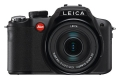

V-LUX 2采用了1410万像素1/2.33英寸MOS，搭载了拥有25mm超广角的18倍光学变焦的镜头，等效135画幅为 25～600mm，最大光圈为F2.8。机身背面搭载46万像素3.0英寸可翻转液晶显示屏。支持1920x1080/60i的AVCHD规格高清拍摄视频，以及1280x720/60p的MPEG-4标清视频拍摄。
挺好！据IFC MALL Leica专卖店介绍：24倍长焦镜头来自德国，软件来自日本，日本生产。重量轻，设置丰富，11张/秒连拍，1080i高清短片拍摄... ...非常适合旅行、家用。包装里除了机身是made in japen，其它配件大部分是made in china，还有一样是越南生产的，好像是肩带吧。 我在无忌论坛里某篇关于laica x1的帖子里有试拍样张。
1、24倍长焦很好用， 2、成像优秀， 3、设置丰富（场景模式里还有很多细化模式，懒人首选）， 4、720p摄像功能优秀， 5、操控方便（用熟了以后）， 6、Leica品牌（虽然是日本生产）
1、CMOS传感器面积太小了，能换成1/1.63的CCD传感器就好了2、万恶的镜头盖，巨难用！！！绝对的设计缺陷！